October@w3c: conferences, webinar, W3Cx MOOCs, meetup and TPAC! https://www.w3.org/participate/eventscal.html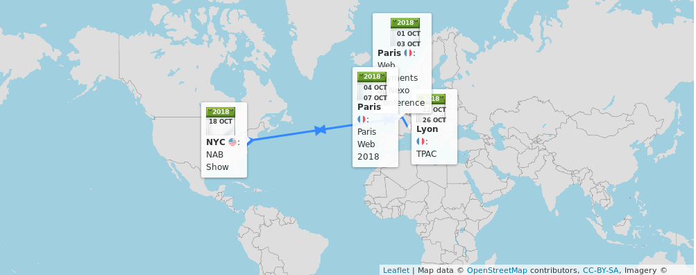
1-2: The @w3c's Web #payments work will be presented by @mountainhippo @nexo_standards annual conference in #Paris 🇫🇷
https://twitter.com/nexo_standards/status/1044900640558911488
https://twitter.com/w3cdevs/status/10467682677995233284-6: @w3c's staff @dontcallmeDOM, @ri and Bert Bos will be @ParisWeb, in #BoisColombes 🇫🇷 https://www.paris-web.fr/
https://twitter.com/w3cdevs/status/104676827317243904015: Opening a new session of @w3cx #HTML5 Apps and Games #MOOC for #app #developers and #gamers https://www.edx.org/course/html5-apps-and-games @micbuffa @edXOnline
https://twitter.com/w3cdevs/status/104676827557152768017: Sign up for an hour long #webinar chaired by @JAlanBird. Learn about the business value for participating in the Publishing #BusinessGroup and review the exciting work being undertaken by the @w3cpublishing group
https://www.w3.org/2018/10/17-publishing-webinar/ [11am-12pm CEST]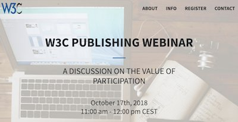
https://twitter.com/w3cdevs/status/104676828064663552118: @wseltzer presents a @w3c initiative aimed at improving #advertising on the Web, @NABShow in #NewYork 🇺🇸 https://www.nabshowny.com/
https://twitter.com/w3cdevs/status/104676828471936204922: Opening a new session of @w3cx #JavaScript Introduction #MOOC for #developers and #designers https://www.edx.org/course/javascript-introduction @micbuffa @uca_education @edXOnline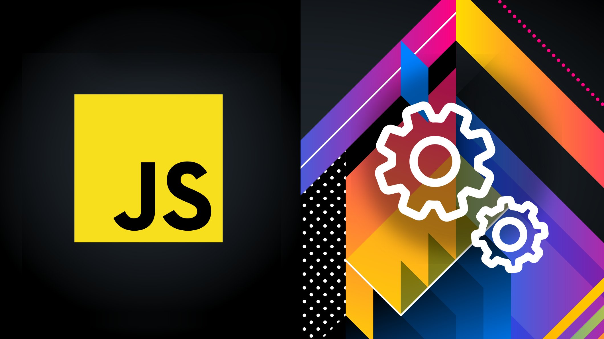
https://twitter.com/w3cdevs/status/104676828722749849722-26: The international Web community gathers in #Lyon 🇫🇷 for a week of #F2FMeetings to foster creation and cooperation on #WebStandards' development https://www.w3.org/2018/10/TPAC/ #w3cTPAC
https://twitter.com/w3cdevs/status/104676829222298009724-26: This year, @w3c partners with @blendwebmix, the annual Web event mixing conferences, workshops and networking - all organized in #Lyon 🇫🇷! https://www.blendwebmix.com/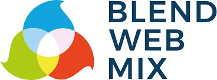
https://twitter.com/w3cdevs/status/104676829710931968222: @w3c's annual #DevMeetup takes place @UniversiteLyon from 6:30pm. Come hear awesome speakers and discover #Web technologies in action. Thx to our sponsors @mozilla With You @Microsoft @Qwant_FR @nttcom and @stickermule! https://www.w3.org/2018/10/Meetup/ #w3cdevs2018 #OFFBlendWebMix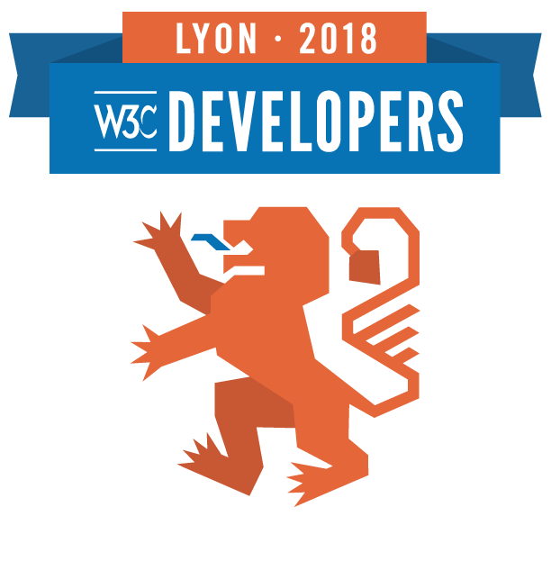
https://twitter.com/w3cdevs/status/1046768294932475907The @w3c XML Entity Definitions for Characters (2nd Edition)
#WebStandard has been translated into Japanese http://takamu.sakura.ne.jp/xml-entity-names-ja/index.html, thanks to @y_takamu! @w3c_keio #html5j
高村さん @y_takamu、XML Entity Definitions for Characters (2nd Edition) と文字に対するXML実体の定義(第2版)のすばらしい日本語訳をありがとう http://takamu.sakura.ne.jp/xml-entity-names-ja/index.html @w3c_keio #html5j @naomi5500
https://twitter.com/w3cdevs/status/1046781387934773248Introducing #WebAudio and a new set of related cool demos to be presented at @w3c's #w3cdevs2018 #meetup on October 22 in #Lyon 🇫🇷
https://www.w3.org/2018/10/Meetup/demos.html #OFFBlendWebMix

Recently moved to #CandidateRecommendation status, the @w3c #WebAudio specification helps process and synthesize audio in #WebApps https://twitter.com/w3c/status/1045680900548235269
https://twitter.com/w3cdevs/status/1047127640052781056Discover what #WebAudio #WebMidi #WebAssembly and #WebComponents allow you to create! For ex., see and hear how native virtual instruments and real-time audio effects can be executed either directly into a #Browser or native applications, without changing a single line of code!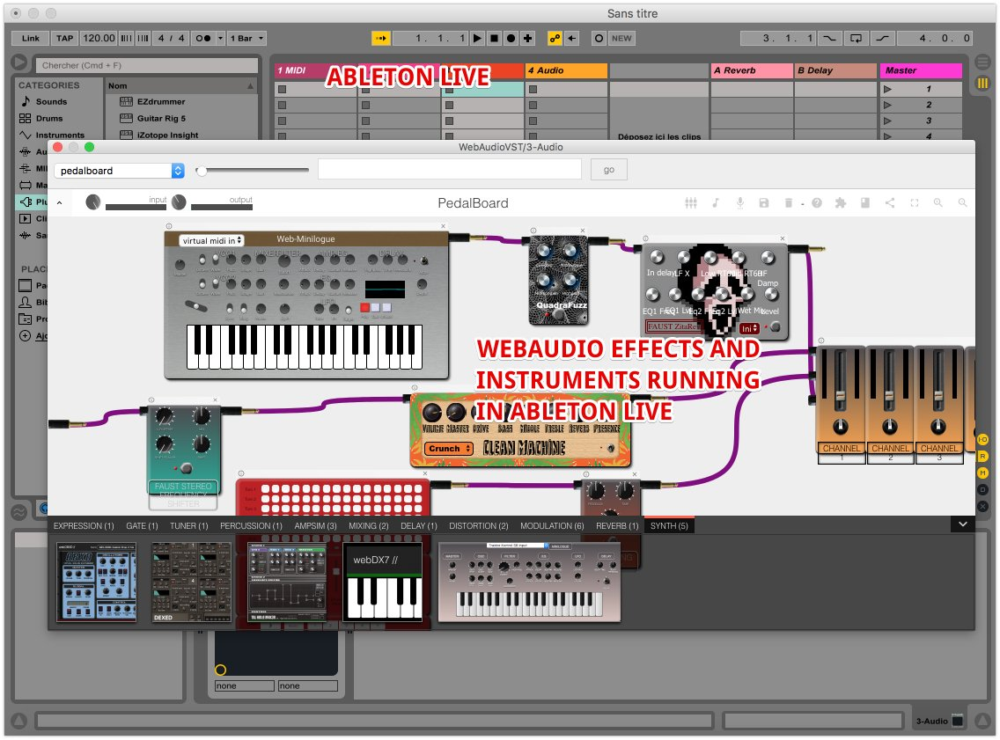
https://twitter.com/w3cdevs/status/1047127649947213826Another example is real time #guitar amp simulations, audio effects and commercial quality synthesizers running as a #WebApp -- demo feat. @micbuffa
https://twitter.com/w3cdevs/status/1047127654107942912Last example: discover how Artificial Intelligence #AI can be used with #WebAudio and other @w3c #APIs to produce smart virtual music instruments https://codepen.io/teropa/full/RMGxOQ/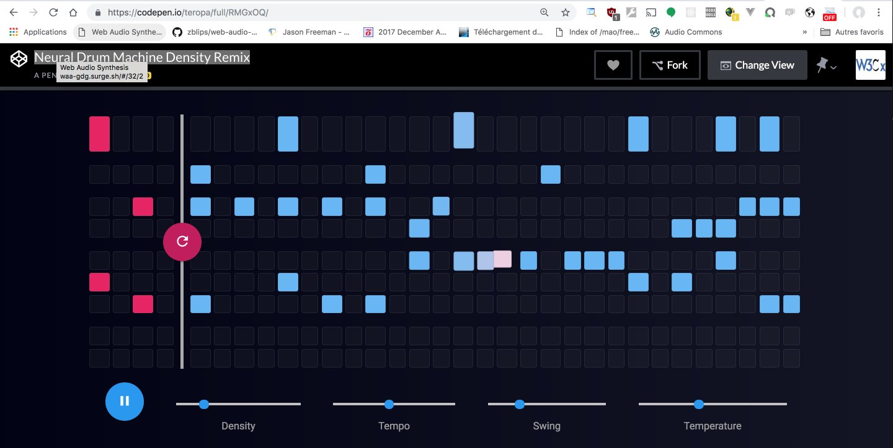
https://twitter.com/w3cdevs/status/1047127660676165633All these demos and more will be shown by @micbuffa of @wimmics @uca_research @Laboratoire_I3S @inria_sophia at the #w3cdevs2018 #meetup on October 22 @UniversiteLyon. This event is free but you need to register! https://ti.to/w3c/w3c-developer-meetup-lyon-2018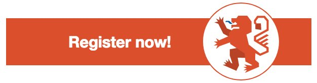
https://twitter.com/w3cdevs/status/1047127664220418048WAI-ARIA Graphics Module and Graphics Accessibility API Mappings support the #accessibility of #graphics such as charts, graphs, maps, technical drawings and scientific diagrams. #ARIA works with #SVG, #HTML5 Canvas, #CSS styling, etc. https://twitter.com/w3cdevs/status/961252466426892292
Congrats to editors @AmeliasBrain, Joanmarie Diggs, @cooper_w3c, Fred Esch and Rich Schwerdtfeger for advancing two @wai #ARIA specifications to #WebStandard status! #timetoadopt https://twitter.com/w3c/status/1047053151235465217
https://twitter.com/w3cdevs/status/1047130013408141312Introducing another of our great speakers at #w3cdevs2018 in #Lyon: come hear @nitot (@QwantCom's VP Advocacy) talk about #privacy on the Web https://www.w3.org/2018/10/Meetup/ #OFFBlendWebMix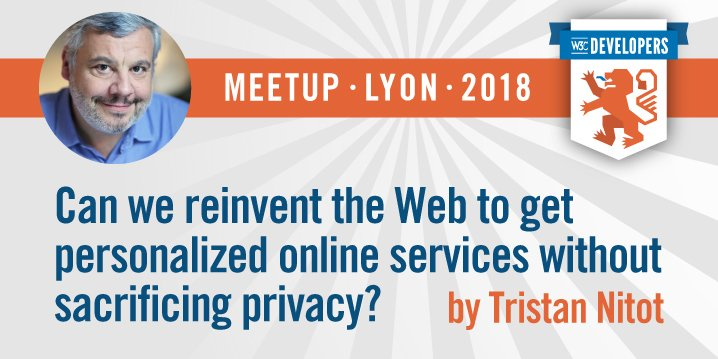
Qwant aims at protecting the privacy of its users when searching the Web, but recognizes users still like personalized services. Find out how open source Web-based innovation can help have it both ways! #Privacy #Cryptography #DeviceSyncing #OpenSource
https://twitter.com/w3cdevs/status/1047509509663588353During the #meetup demo time, @nitot and Levent Demir will demonstrate
@QwantCom's Masq technology and how it manages to offer personalization while knowing nothing about users https://www.w3.org/2018/10/Meetup/demos.html#demos-sponsors #Masq #OpenSource https://twitter.com/QwantCom/status/1009726262657605632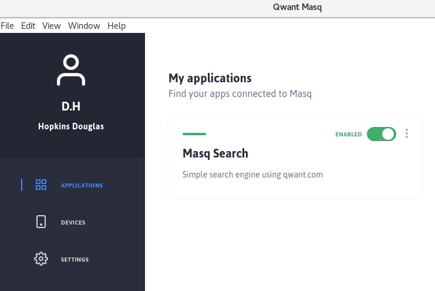
https://twitter.com/w3cdevs/status/1047509515166515200To hear directly from @nitot on how online services can be personalized yet private by design, register to the @w3c #meetup that will take place on Monday 22 october @UniversiteLyon https://ti.to/w3c/w3c-developer-meetup-lyon-2018

https://twitter.com/w3cdevs/status/1047509518945607680And it is now up and running https://mobile.twitter.com/anssik/status/1047526339891404801
https://twitter.com/w3cdevs/status/1047526784491827201“@ParisWeb il faut qu’on parle.” @dontcallmeDOM à propos du W3C pour les développeurs Web, et de l’impact des Développeurs Web sur le Web.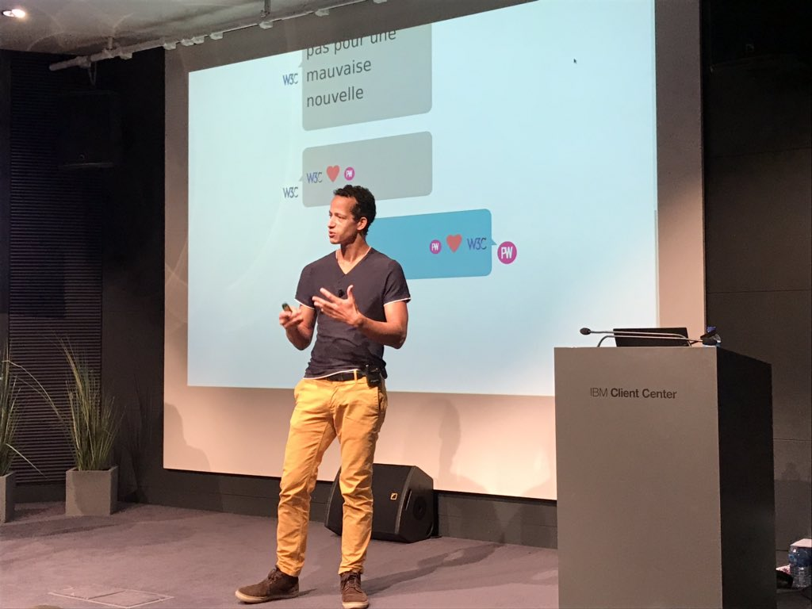
https://twitter.com/w3cdevs/status/1047820406734901253@ParisWeb follow us! ;)
https://twitter.com/w3cdevs/status/1047822352246091776Samedi après-midi, je te retrouve @ParisWeb, pour un atelier W3C/Développeurs. https://www.paris-web.fr/2018/ateliers/le-w3c-pour-les-developeurs-web-echanges-et-discussions.php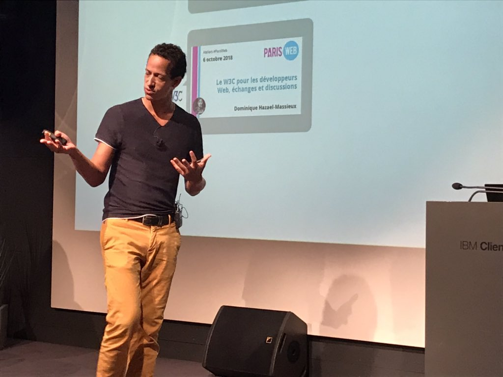
https://twitter.com/w3cdevs/status/1047823775105015814Do not miss the upcoming free @w3c #developers #meetup in #Lyon 🇫🇷, on Monday 22 October from 6:30pm @UniversiteLyon. Great line up of speakers and cool demos of Web technologies in action: https://www.w3.org/2018/10/Meetup/ and https://www.w3.org/2018/10/Meetup/demos.html Please register!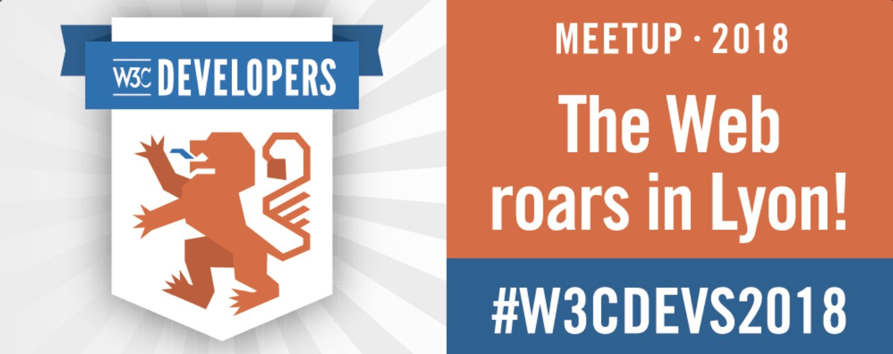
A ne pas manquer par les #designers #developers de #Lyon et du #GrandLyon ! Venez rencontrer la communauté Web du @w3c lors de ce #meetup gratuit : demos, présentations, discussions sont au menu de la soirée ! Il faut juste s'inscrire 👉 https://ti.to/w3c/w3c-developer-meetup-lyon-2018 #OFFBlendWebMix
https://twitter.com/w3cdevs/status/1047883338751639553A big thank you to our sponsors @Qwant_FR @Microsoft @mozilla @stickermule @nttcom @webcastors and WithYou. With special thanks to @UniversiteLyon for hosting the event!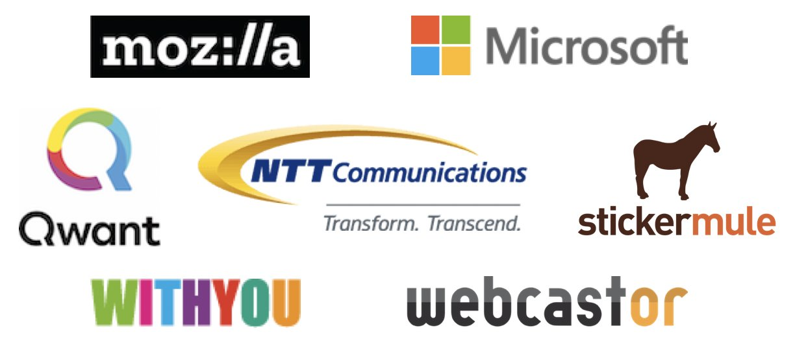
https://twitter.com/w3cdevs/status/1047886399393988610Ce talk sera rejoué le 22 octobre à #Lyon, lors du @w3c #meetup ! https://www.w3.org/2018/10/Meetup/ #i18n #international #OFFBlendWebMix #PlayitAgain https://twitter.com/mupsigraphy/status/1048216856933408769
https://twitter.com/w3cdevs/status/104924686995892224029: @tag organizes a #public #meetup "MeetTheTAG" in #Paris, 🇫🇷@mozilla's offices. Come learn about current TAG's work (design reviews of emerging #Web technologies) and give feedback in real time! https://github.com/w3ctag/meetings/tree/gh-pages/2018/10-paris
https://twitter.com/w3cdevs/status/1049309274885816320Excited to show streamlined #WebPayments demos in @firefox and @googlechrome at #w3cdevs2018 #meetup on October 22 in #Lyon 🇫🇷! https://www.w3.org/2018/10/Meetup/demos.html #OFFBlendWebMix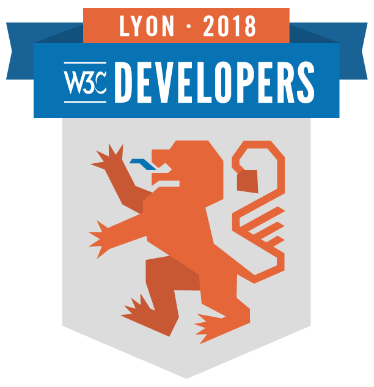
The @w3payments suite of #APIs lets users pay for goods and services quickly, efficiently, and securely using a variety of innovative payment methods (credit cards, Google Pay , Apple Pay, etc.)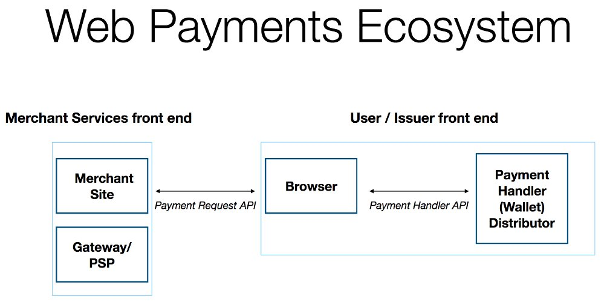
https://twitter.com/w3cdevs/status/1049696567542845440Thanks to the @w3c Web payment handler #API, the Web can enable completely new and innovative payment experiences. Faster #CheckOut and more secure user experiences https://www.w3.org/TR/payment-handler/
https://twitter.com/w3cdevs/status/1049696575654645761The @w3c Web Payment #API allows the user agent to act as intermediary between merchants, users and payment method providers: https://www.w3.org/TR/payment-request/
https://twitter.com/w3cdevs/status/956510872108707840
https://twitter.com/w3cdevs/status/1049696573494575105In their demo, @marcosc (@mozilla) and @rsolomakhin (@google) will show how different browsers can use the same code to facilitate #payments on the Web. Register now! https://ti.to/w3c/w3c-developer-meetup-lyon-2018

https://twitter.com/w3cdevs/status/1049696577282080768.@ri is responsible for the internationalization activity in @w3c @webi18n whose work is to ensure that Web technologies can be used in as many languages and cultures as possible (and ultimately, all of them)
Introducing one more of our great speakers lineup at the #w3cdevs2018 #meetup - come hear from @ri what it takes to make and keep the #Web truly world wide on Oct 22 in #Lyon https://www.w3.org/2018/10/Meetup/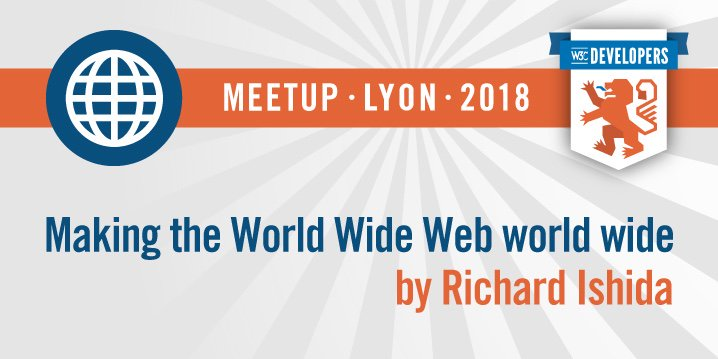
https://twitter.com/w3cdevs/status/1049998628473974784He will also highlight how to get involved - if you too believe the Web is meant to be a universal computing platform, you too can help in making that vision true.
To come and hear from @ri in #Lyon, do not forget to register for the free event https://ti.to/w3c/w3c-developer-meetup-lyon-2018
https://twitter.com/w3cdevs/status/1049998631825301504In his talk, @ri will present how @webi18n makes it a reality, and will introduce the recently launched Internationalization Initiative which is reinforcing that program https://twitter.com/webi18n/status/1016669678708588545
https://twitter.com/w3cdevs/status/1049998630155939841and a reminder, in case #Houdini doesn't ring a bell https://twitter.com/w3cdevs/status/983277098705063936
More #CSS #Houdini implementation, yay! https://twitter.com/DasSurma/status/1050322467481374721
https://twitter.com/w3cdevs/status/1050325577390014466#WebAuthn is expected to reduce the risks associated with passwords significantly
https://twitter.com/w3cdevs/status/976111114739175426
Introducing another demo on schedule of our #w3cdevs2018 #meetup in #Lyon 🇫🇷 - a set of illustrations on how #WebAuthN is set to change how we authenticate on the Web by @ve7jtb, Emil Lundenberg (@yubico) and @christiaanbrand (@google)
https://www.w3.org/2018/10/Meetup/demos.html
https://twitter.com/w3cdevs/status/1050387591432982528To enjoy these demos, all of our exciting #w3cdevs2018 demos and talks, make sure to register for the event on Oct 22: https://ti.to/w3c/w3c-developer-meetup-lyon-2018

https://twitter.com/w3cdevs/status/1050387595069415424We will also get a demo from @drsecure on how #WebAuthn and Web Payments can be used together to make online payments safer
https://twitter.com/w3cdevs/status/987306196708274176
https://twitter.com/w3cdevs/status/1050387593144258560This #CommunityGroup started in March this year as we reported back then https://twitter.com/w3cdevs/status/976128411654537217
What technical approaches, in what procedural context, can be explored to help with the issues brought by technology in the social discourse (while avoiding creating new ones)? The #CredibleWeb #CommunityGroup is reporting its progress on the topic https://twitter.com/sandhawke/status/1050501418946371585
https://twitter.com/w3cdevs/status/1050680882380591104#fr J-7 avant le #meetup #w3cdevs2018 le 22 octobre à #Lyon 🇫🇷 - une occasion unique de découvrir les nouveautés de la plate-forme Web présentées directement par ceux qui les bâtissent ! Les places partent vite, inscrivez vous rapidement ! #OFFBlendWebMix https://www.w3.org/2018/10/Meetup/
https://twitter.com/w3cdevs/status/1051819366034092034Only 6 days before our #w3cdevs2018 #meetup in Lyon 🇫🇷 during #w3cTPAC - introducing another topic of our demo sessions: #ImmersiveWeb, i.e. how to bring augmented and virtual reality (AR, VR, XR) to Web browsers #OFFBlendWebMix
https://www.w3.org/2018/10/Meetup/demos.html
During the #w3cdevs2018 demo session, we'll get demos of the #ImmersiveWeb in action via #WebXR from @rcabanier, courtesy of @MagicLeapDevs
https://twitter.com/w3cdevs/status/1052192597282672641A couple of weeks ago, the @w3c #ImmersiveWeb Working Group was launched, to bring the work on #WebXR to the standardization track https://twitter.com/w3c/status/1044305804185276417
https://twitter.com/w3cdevs/status/1052192601334398976As usual, that #WebXR API is developed in github https://github.com/immersive-web/webxr/ with in particular a detailed explainer on how the technology is expected to be used https://github.com/immersive-web/webxr/blob/master/explainer.md
https://twitter.com/w3cdevs/status/1052192606879240192The #WebXR Device API brings the right primitives to create VR & AR experiences in Web browsers: connecting to VR headsets, setting up the right rendering path, support for the right input devices, etc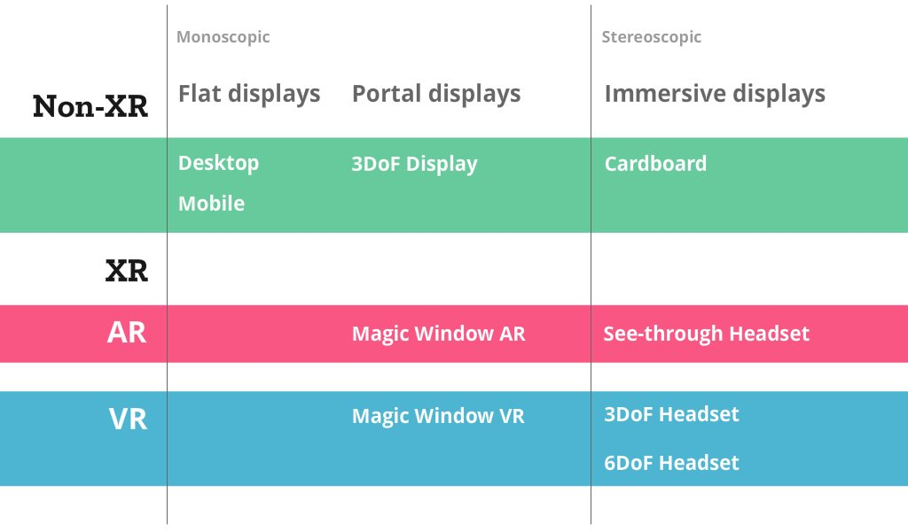
https://twitter.com/w3cdevs/status/1052192603502854145Meanwhile, the #ImmersiveWeb Community Group continues in parallel to incubate lots of other needed bricks to make the Web a great platform for XR https://www.w3.org/community/immersive-web/ https://github.com/immersive-web/
https://twitter.com/w3cdevs/status/1052192609500725252To enjoy this #XR demos, all of our other exciting #w3cdevs2018 demos and talks, make sure to register for the event on Oct 22: https://ti.to/w3c/w3c-developer-meetup-lyon-2018/

https://twitter.com/w3cdevs/status/1052192611748855813TPAC (aka Technical Plenary & Advisory Committee) is the biggest event in the @w3c year, where most W3C groups come together in the same place to have their face-to-face meetings, and have joint meetings with one another https://www.w3.org/2018/10/TPAC/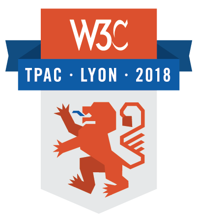
If you're coming to #w3cTPAC next week in Lyon, these cards provide a great overview of all you need to know about the week https://twitter.com/w3c/status/1052189412900184064
https://twitter.com/w3cdevs/status/105221446667329946136 Working and Interest Group meetings, 10 Community Group meetings happening the same week in the same place - you can feel the future of the Web Platform shaping up organically across these groups and meetings https://www.w3.org/2018/10/TPAC/schedule.html
https://twitter.com/w3cdevs/status/1052214471006048256More importantly, it's a unique opportunity for the @w3c community at large to meet together, exchange ideas, plan for new work, and socialize.
https://twitter.com/w3cdevs/status/1052214469705764865naturally, there is also our very own #w3cdevs2018 meetup on the Monday night with talks and demos, and exchanges with the local dev community https://www.w3.org/2018/10/Meetup/
https://twitter.com/w3cdevs/status/1052214475468759042In addition to these meetings, the Wednesday of the week is run as an unconference, across group boundaries - all the participants are invited to make and review suggestions for breakout sessions that will run throughout that day https://www.w3.org/wiki/TPAC/2018/SessionIdeas#Proposed_sessions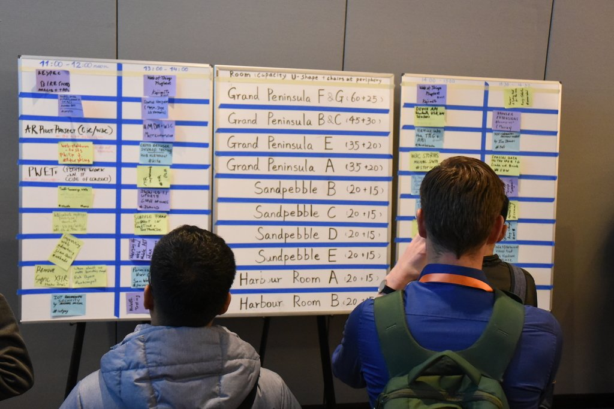
https://twitter.com/w3cdevs/status/1052214472549560320.@rachelandrew will talk about the new CSS layout, which also happens to be the title of her latest published book (coincidence???)
https://twitter.com/rachelandrew/status/917764714414747651
Announcing our last (but not least by any margin) speaker at the #w3cdevs2018 #meetup next Monday in #Lyon 🇫🇷 - @rachelandrew - invited expert to @csswg, editor in chief of @smashingmag, and independent web developer https://www.w3.org/2018/10/Meetup/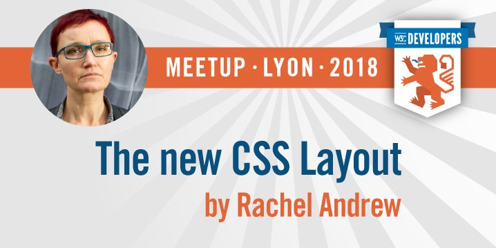
https://twitter.com/w3cdevs/status/1052563173553786880To come and hear from @rachelandrew in #Lyon, do not forget to register for the free event https://ti.to/w3c/w3c-developer-meetup-lyon-2018/

https://twitter.com/w3cdevs/status/1052563175776952320#WebAuthN stands for Web Authentication and provides an API to integrate external security devices in Web browsers, enabling more secure flows both in registration and authentication. Using your phone as a phishing-resistant security key is a game changer!
https://twitter.com/w3cdevs/status/976111114739175426
The clock is ticking - just 4 days left before our #w3cdevs2018 #meetup in #Lyon 🇫🇷 @UniversiteLyon ! The last topic of our demos of ongoing standardization efforts will be #WebAuthN #OFFBlendWebMix
https://www.w3.org/2018/10/Meetup/demos.html
https://twitter.com/w3cdevs/status/1052905138472579072To enjoy these demos, all of our exciting #w3cdevs2018 demos and talks, make sure to register for the event on Oct 22: https://ti.to/w3c/w3c-developer-meetup-lyon-2018/
https://twitter.com/w3cdevs/status/1052905142469763072The demos will show #WebAuthn in combination with #Bluetooth Low Energy, with biometric devices, etc; it will also show the possible role of #WebAuthN in providing more secure #WebPayment workflows, a key aspect at the intersection of UX and security https://twitter.com/w3cdevs/status/987306196708274176
https://twitter.com/w3cdevs/status/1052905140854894592The name #CSS Houdini refers to the magic box that CSS brings to the Web: browsers do lots of amazing work, but leave little for devs. to intervene. Thx to CSS Houdini, certain parts of the CSS engine will be exposed to #WebDevelopers https://twitter.com/w3cdevs/status/983277092501671937
https://twitter.com/w3cdevs/status/1052946348608315394#CSS Houdini lets you build polyfills for CSS and experiment with crafting new CSS properties or values and has been developed as a joint effort of the @csswg and @tag https://twitter.com/w3cdevs/status/1027861858450071552
Another @w3c work in progress that will be demo-ed at the #w3cdevs2018 #meetup in #Lyon: the #CSS #Houdini APIs #OFFBlendWebMix https://www.w3.org/2018/10/Meetup/demos.html
https://twitter.com/w3cdevs/status/1052946346469154816Register to @w3c's #DevMeetup and come hear @bfgeek (@google) talk about CSS Houdini! https://ti.to/w3c/w3c-developer-meetup-lyon-2018 #OFFBlendWebMix

https://twitter.com/w3cdevs/status/1052946350374051840The first demo is immersive-style #telepresence, that is an application enabling an operator to have a real-time sensation of being at a difference place, and being able to interact with the #remote environment via a #robot #WebRTC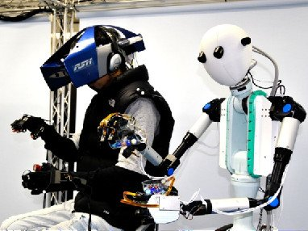
Introducing the last demos of the #w3cdevs2018 #meetup: @nttcomm's #WebRTC Gateway - https://www.w3.org/2018/10/Meetup/demos.html #Lyon @UniversiteLyon
https://twitter.com/w3cdevs/status/1053258546635309056The second demo is about sending data to the cloud. @nttcom has developed a new platform to let the users freely compose their original media processing pipeline (e.g. recording and voice recognition) #WebRTC #VoiceRecognition #MediaProcessing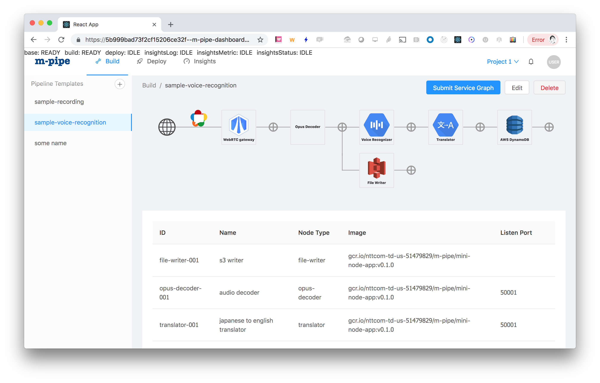
https://twitter.com/w3cdevs/status/1053258552679297024Come discuss with the @nttcom's team @komasshu, Jun Makishi and Toshiya Nakakura on what #WebRTC can do, and how their gateway platform can help realize your application with real-time multimedia data.
https://twitter.com/w3cdevs/status/1053258556378673152The @w3c #DevMeetup demos will start at 6:30pm next Monday 22October. We invite #developers and #designers from #Lyon and #GrandLyon to attend! Register fast: https://ti.to/w3c/w3c-developer-meetup-lyon-2018 #OFFBlendWebMix

https://twitter.com/w3cdevs/status/1053258562976268288A sample of stickers avail. at tonight's #w3cdevs2018 #devmeetup and during #w3cTPAC too. Thanks to @stickermule! The Web roars in #Lyon! 😄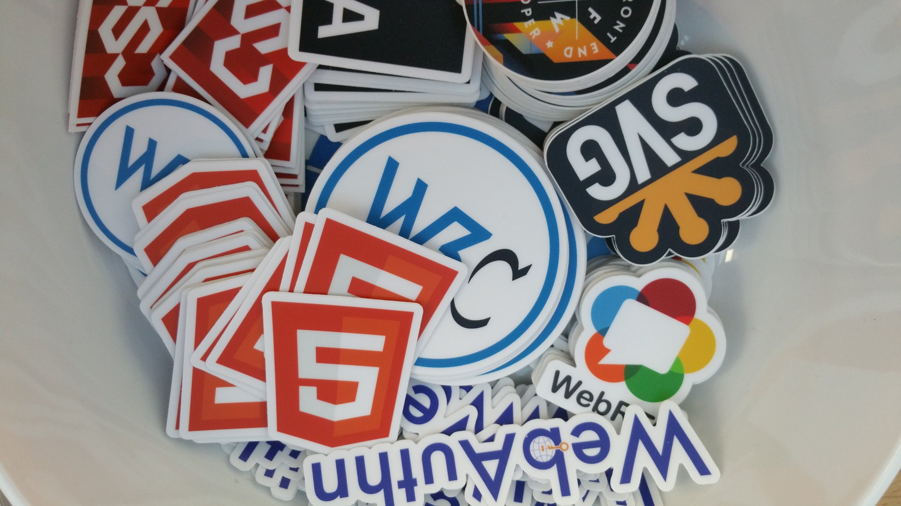
https://twitter.com/w3cdevs/status/1054369137034698757#w3cTPAC is wrapping up after an intensive week of @w3c meetings. For those in #Paris Monday October 29, reminder there is a @w3ctag meetup hosted by @MozillaParis https://ti.to/w3c-tag/meet-the-tag-paris
https://twitter.com/w3cdevs/status/1055826424257527809